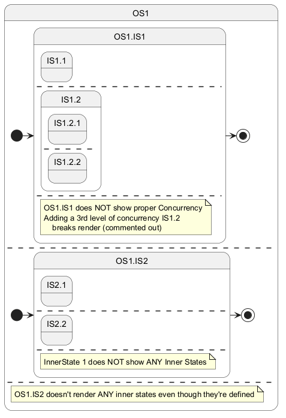

@startuml
set separator none
state OS1 {
state OS1.IS1 {
state IS1.1
--
state IS1.2 {
state IS1.2.1
' NOTE: Uncommenting the following line breaks the render
--
state IS1.2.2
}
--
note as Note.OS1.IS1
OS1.IS1 does NOT show proper Concurrency
Adding a 3rd level of concurrency IS1.2
breaks render (commented out)
end note
}
[*] -> OS1.IS1
OS1.IS1 -> [*]
--
state OS1.IS2 {
state IS2.1
--
state IS2.2
--
note "InnerState 1 does NOT show ANY Inner States" as Note.IS2
}
[*] -> OS1.IS2
OS1.IS2 -> [*]
--
note as Note.OS1.IS2
OS1.IS2 doesn't render ANY inner states even though they're defined
end note
}
@enduml